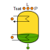
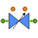
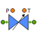
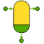
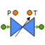

| Symbol | Name | Description |
| ACoil [+] | Round tube plate fin heat exchanger with multiple coils in parallel | |
| ANALOG_varLim [+] | ANALOG controller with variable upper and lower limits | |
| ANALOG_varLimSpd [+] | ANALOG controller with variable upper and lower limits | |
| AccumulatorBase [+] | Refrigerant side base component for j-type accumulators | |
| AccumulatorTwoFluid_prescribed [+] | ||
| Accumulator_Receiver [+] | Suction-line accumulator accumulator. Can be used as liquid-line receiver also. | |
| AdiabVol_Ph [+] | Lumped adiabatic control volume with P,h state variables | |
| AdiabVol_Phr [+] | Lumped adiabatic volume with P,h,rho state variables | |
| AdiabVol_ru [+] | Lumped adiabatic volume with rho,u state variables | |
| AirSink [+] | Air sink | |
| AirSource [+] | ||
| AirSource_Const [+] | Air source with constant values | |
| AirTemperatureSensor [+] | Returns dry bulb temperature in an air stream | |
| AnnularStream_Ph [+] | Annular stream with pressure-enthalpy state variables and void fraction two-phase models | |
| AnnularStream_ru [+] | rho,u state variables | |
| AnnularWall_naturalConvection [+] | Annular wall with natural convective heat transfer on outer surface | |
| AnnularWall_onePort [+] | 1D wall. Thermal port on inner wall, insulated on the outside | |
| AnnularWall_twoPort [+] | 1D wall. Thermal ports on both inner and outer wall. | |
| BPHXStream [+] | Generic stream with simplified geometry used for BPHX models | |
| BPHX_SWEP [+] | Component model of SWEP B16DWx30/1P-SC-U Brazed Plate Heat Exchanger used in CORA | |
| BackPressureRegulator [+] | Test model based on the TXV diaphragm model | |
| CO2AccumulatorBase_externChiller [+] | Adds a cartridge heater to Accumulator, and has external connection for chiller HX | |
| CO2AccumulatorBase_heater [+] | Adds cartridge heater, maintains prescribed cooling | |
| CO2AccumulatorBase_prescribed [+] | Prescribed cooling and heating input values. Gravity neglected and two-phase fluid assumed homogeneous. | |
| CO2AccumulatorRefrigerantVolume [+] | Complete CO2Accumulator model with thermal ports for chiller coil and heater heat transfer | |
| CO2Accumulator_complete [+] | CO2 Accumulator with cartridge heater component and cooling spiral | |
| CO2Accumulator_externChiller [+] | ||
| CO2Accumulator_heater [+] | CO2 Accumulator with cartridge heater component | |
| CO2Accumulator_prescribed [+] | CO2 Accumulator with heating and cooling powers prescribed | |
|  | CO2Accumulator_prescribed_new [+] | CO2 Accumulator with cartridge heater component and cooling spiral |
| CORA_PCO_CO2 [+] | Process Control Object for CORA. Includes all the CO2 control logic | |
| CORA_PCO_Chiller [+] | Process control object for CORA chiller. Contains R404A control logic | |
| CORA_PCO_Chiller_pid [+] | CORA Chiller PCO for PID compressor control | |
| CTHX_Ph [+] | Concentric Tube Heat Exchanger with Ph state variables | |
| CV_Ph [+] | Lumped volume with Ph state variables and thermal port heat transfer | |
| CV_Phr [+] | Lumped volume with Phr state variables and thermal port heat transfer | |
| CV_ru [+] | Lumped volume with rho,u state variables and thermal port heat transfer | |
| CartridgeHeater [+] | Note: Heat load analog_signal port has n nodes, therefore, the connected inputs are already discretized into n volumes. | |
| CartridgeHeaterCtrl [+] | ||
| CartridgeHeaterPWM [+] | ||
| CartridgeHeater_axial [+] | ||
| CheckValve [+] | On-Off Valve. Default flow direction is In to Out. | |
| Compressor [+] | Simple compressor model based on constant efficiencies | |
| CompressorAHRI [+] | AHRI 10-coefficient polynomial compressor model | |
| Compressor_vfd [+] | Compressor model with Variable Frequency Drive | |
| Constant [+] | ||
|  | ControlValve [+] | Generic valve with controllable orifice opening |
| DEMO_PCO_Accu [+] | PCO for the Accumulator of DEMO [OBSOLETE] | |
| DEMO_PCO_CO2 [+] | Process Control Object for the DEMO plant [OBSOLETE] | |
| DEMO_PCO_Plant [+] | Process Control Object for the DEMO plant | |
| Damper [+] | ||
| DamperBase [+] | Base component for Damper. Assumes no ambient heat transfer | |
| DeltaTSensor [+] | Superheating or Subcooling sensor | |
| Demux12 [+] | ||
| Demux14 [+] | ||
|  | DetailedTXV [+] | Detailed Thermostatic expansion valve. Includes choked flow calculations |
| DummyLoad [+] | Pipe model with a cartridge heater inside | |
| DummyLoadTout [+] | Adds ports that output average heater and wall temperatures | |
| DummyLoad_Tamb [+] | Pipe model with a cartridge heater inside | |
| EconCompressor [+] | ||
| EconCompressorBase [+] | Base class for compressor with vapour-injection port | |
| EnthalpySensor [+] | ||
| Fan [+] | Simplified fan component. Merely imposes a mass flow rate on air stream | |
| Fan_speed [+] | Fan with prescribed mass flow rate | |
| FlashTank [+] | Flash tank component for phase separation | |
| FlashTankBase [+] | Refrigerant-side base component for Flash tanks | |
|  | FlashTank_insulated [+] | Flash tank component for phase separation |
| FlowSplitter [+] | ||
| FluidStream_Ph [+] | Ph state variables. No tube wall, only refrigerant stream | |
| FluidStream_Phr [+] | Phr state variables. No tube wall, only refrigerant stream | |
| FluidStream_dpdt [+] | Uniform pressure derivative cylindrical stream | |
| FluidStream_ru [+] | rho-u state variables. No thermal wall | |
| GenericOrifice [+] | Short tube orifice (fixed diameter opening) | |
| GenericWall [+] | Generic wall component (for brazed plate heat exchangers) | |
| LevelController [+] | Controls level of accumulator using Set-Reset type logic | |
| LevelController_splice [+] | Level control without boolean on/offs. Instead, continuous control to maintain constant level | |
| LumpedRoomModel [+] | Lumped volume with multiple internal heat sources | |
| LumpedShell [+] | Lumped shell component. Closed at both ends | |
| LumpedShell_insulated [+] | Lumped shell, closed at both ends and perfectly insulated | |
| Mux10 [+] | ||
| Mux11 [+] | ||
| Mux20 [+] | ||
| OnOff [+] | ||
| PRCond_INT [+] | ||
| PRConditioner [+] | Converts deg C to 4-20 mA signal for PLC | |
| Pipe_Ph [+] | Insulated pipe. P,h state variables | |
| Pipe_Phr [+] | Insulated pipe. P,h,rho state variables | |
| Pipe_ru [+] | 1D Pipe. rho,u state variables. | |
| PlateFinHeatExchanger [+] | Round tube plate fin heat exchanger | |
| PressureTemperature [+] | Pressure/Temperature cross. Also outputs Subcooling and Saturation Temperature | |
| Pump_Lewa [+] | Lewa diaphragm pump model with variable frequency drive | |
| Ramp [+] | Linear ramp up to (or down to) a predefined limit | |
| RefSink [+] | Refrigerant sink with port connections for boundary variables | |
| RefSink_Const [+] | Refrigerant sink for constant boundary conditions | |
| RefSource [+] | Refrigerant source with port connections for boundary variables | |
| RefSource_Const [+] | Refrigerant source for constant boundary conditions | |
| ReversingValve [+] | Reverse flow between two input and two output streams | |
| SaturationSensor [+] | Output saturation temperature or pressure | |
| ScrollCompressor [+] | Inlet must connect to resistive component. Outlet to capacitive | |
| SimplePump [+] | ||
| SimplePump_Ctrl [+] | ||
| SmoothStartup [+] | Creates a log curve startup ramp | |
| SmoothStartupIO [+] | Creates a log curve startup ramp | |
| SplitRangeController [+] | Split range controller for a single input PID | |
| SplitRangeController_2PID [+] | Split Range Controller for 2 input PIDs | |
| SplitRangeController_phase [+] | For the CORA model | |
| StartupRamp [+] | ||
| StatePoint [+] | ||
| SuctionChamberVolume [+] | Adds a thermal port on the inside to account for Motor heat transfer. | |
| SuctionChamberWall [+] | Suction chamber wall. Open at one end | |
| SuperheatSensor [+] | Superheating is positive, subcooling is negative | |
|  | TXV [+] | Thermostatic expansion valve. Includes delay in response of the sensor bulb |
| Tank_addInlet [+] | Add inlet ports to Tank model | |
| TemperatureSensor_Celsius [+] | Temperature sensor (°C) | |
| ThreeWayValve [+] | ||
| VapourQualitySensor [+] | ||
| boolDemux5 [+] | ||
| dP [+] | Static pressure drop component. Used often between two capacitive components to ensure cohesive boundary conditions | |
| polynomial [+] | Polynomial function of input signal | |
| t_AccumulatorTFM_v [+] | ||
| t_Accumulator_TFM [+] | Two-fluid accumulator model with outlet port | |
| testAccumulatorVolume [+] | ||
| testCPP [+] | Test to confirm that the EcosimProRefprop library is consistent with Matlab refprop calls | |
| testFluidProp [+] | General purpose component for playing around with fluid property calls in EcosimPro | |
| testSine [+] | ||
| test_AccumulatorTFM [+] | Two-fluid accumulator model with outlet port | |
| test_AccumulatorTFM_mix [+] | Spray cooling model where the spray mixes completely with the vapour phase | |
| test_AccumulatorTFM_pini [+] | ||
| test_AccumulatorTFM_spray [+] | ||
| test_PartialDers [+] | Compared partial derivatives: Refprop vs Lookup Table vs Forward Difference | |
| test_QcReqd [+] | ||
| test_levelOut [+] | ||
| test_oscpump [+] | ||
| test_subCoolOut [+] |
Document generated automatically (Date: 2021:03:16, Time: 14:29:38)